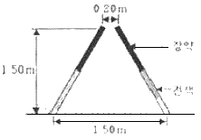
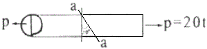
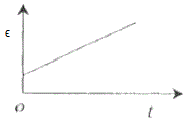
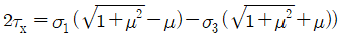
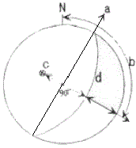

화약류관리기사 (2008-03-02 기출문제)
1과목: 일반화약학
1. 폭약의 배합에 있어서 산소 과부족량을 부(-)로 하면 폭발 후 어떠한 유독 기체의 생성량이 증가하는가?
- 이산화탄소
- 일산화탄소
- 수소
- 산소
(정답률: 알수없음)

2. 뇌홍의 폭발 반응식의 Hg(ONC)2→Hg+N2+2CO이다. 이 때 폭발 후 CO의 생성을 방지하고 열량을 크게 하기 위하여 첨가하는 것은?
- 염소산칼륨
- 알루미늄
- 규소
- 전분
(정답률: 알수없음)
3. 질산암모늄은 33.2℃를 오르내리면서 용적변화가 일어나고 입자표면의 파괴나 수분의 방출로 인하여 고화현상이 발생한다. 이와 같이 32.3℃와 같은 온도를 무엇이라고 하는가?
- 전이점
- 융점
- 응고점
- 임계점
(정답률: 알수없음)
4. 연주시험(lead block test)은 화약의 어떠한 성질을 조사하는가?
- 안정도
- 순폭강도
- 흡습도
- 폭발위력
(정답률: 알수없음)
5. 화약의 성능시험 검사의 연결이 잘못된 것은?
- 도트리쉬법-폭속시험
- 순폭시험-뇌관의 강도시험
- 유발시험-미찰강도시험
- 가열시험-안정도시험
(정답률: 알수없음)
6. 다음 중 DDNP의 분해액으로 주로 사용하는 것은?
- 염산
- 수산화나트륨 수용액
- 차아황산나트륨
- 질산
(정답률: 알수없음)
7. 충격 감도시험에 있어서 동일한 고도에서 10회 반복시험했을 때의 임계폭점(critcal point of explosion)을 구하는 기준을 옳게 나타낸 것은?
- 폭발과 불폭이 각각 50%
- 10회 완전 폭발
- 10회 완전 불폭발
- 폭발과 불폭이 각각 20%와 80%
(정답률: 알수없음)
8. NG가 동결되었을 때 발생하는 현상을 옳게 설명한 것은?
- 기폭제에 대하여 둔해진다.
- 충격에 둔감해지고 폭발위력이 감소한다.
- 안정성이 확보되어 취급이 편해진다.
- 충격ㆍ마찰에 민감해진다.
(정답률: 알수없음)
9. 다음 중 폭약에 해당하는 것은?
- 뇌홍
- 연화
- 흑색화약
- 무연화약
(정답률: 알수없음)
10. 산업폭약에 대한 규정에서 다이너마이트는 니트로겔을 기제로 하고, 그 함유량이 몇 wt%를 초과하는 폭약을 말하는가?
- 3
- 6
- 20
- 45
(정답률: 알수없음)
11. 일반적으로 질산에스테르 화약이나 니트로화합물의 화약과 같은 대표적인 화약류 제조에 있어서 가장 많이 사용되는 혼산은?
- 질산과 아세트산
- 염산과 빙초산
- 질산과 황산
- 아세트산과 염산
(정답률: 알수없음)
12. 슬러리(Slurry)폭약의 조성으로 일반적으로 사용되지 않는 것은?
- 질산암모늄
- TNT
- NaCl. 경유
- 물
(정답률: 알수없음)
13. 도화선의 연소초시는 시료 5개의 평균치가 어느 정도 범위에 있어야 하는가?
- 10~14초/m
- 100~140초/m
- 1000~1400초/m
- 10~14분/m
(정답률: 알수없음)
14. 흑색화약에 대한 설명 중 틀린 것은?
- KNO3을 주제로 한 화약이다.
- 공기 중에서 흡습성이 있다.
- 자연분해하기 쉽기 때문에 건조한 상태에서 오래 저장할 수 없다.
- 배합재료에는 황(S)이 포함된다.
(정답률: 알수없음)
15. 다음 중 산소 공급제로만 구성된 것은?
- NaNO3, KNO3, NH4CIO4
- BaSO4, NaCl, Al
- K2SO4, CaCO3, Fe
- CuNO3, Al, H2SO4
(정답률: 알수없음)
16. 저항 1.4Ω의 전기뇌관 10발을 직렬결선하여 제발시키려면 몇 V의 전압이 필요한가? (단, 단선 1m의 저항이 0.021Ω인 발파 모선은 총 연장 100m이며 발파기의 내부저항은 없고, 뇌관 1개당 소요전류는 2A이다.)
- 21.5
- 32.2
- 39.0
- 45.5
(정답률: 알수없음)
17. 공업용 뇌관 또는 전기뇌관에 대한 설명으로 옳은 것은?
- 공업용 뇌관에서 기폭약으로 사용하는 뇌홍폭분은 일반적으로 뇌홍 40%, 염소산칼륨 60% 혼합물이다.
- 전기뇌관은 점화전류시험에서 0.25A의 직류 전류에서 발화하여야 한다.
- 전기뇌관의 첨장약으로는 테트릴, 헥소겐 등을 사용한다.
- LP 전기뇌관은 초시차가 1ms 미만인 것이다.
(정답률: 알수없음)
18. 다음 중 니트로셀룰로오스의 제조원료는?
- 에틸렌글리콜
- 펜타에리트리트
- 글리세린
- 식물섬유린 정제된 솜
(정답률: 알수없음)
19. 다음 중 ㅅ중 발파에 가장 적합한 폭약은?
- 흑색화약
- 초안폭약
- 초유폭약
- 슬러리폭약
(정답률: 알수없음)
20. 다음 순폭도에 대한 설명으로 옳은 것은?
- 순폭되는 최대 약포간의 거리를 약경으로 나눈 것이다.
- 순폭되는 최대 약포간의 거리를 약량으로 나눈 것이다.
- 순폭되는 최대 약포간의 거리에 약경을 곱한 것이다.
- 순폭되는 최대 약포간의 거리에 약경을 합한 것이다.
(정답률: 알수없음)
2과목: 발파공학
21. 발파에 의한 지반진동속도 예측식의 특성에 관한 설명으로 맞는 것은?
- 자승근 환산거리를 사용하는 식은 봉상장약 또는 주상장약(column charge)을 기초로 한 것이다.
- 입지상수 또는 발파진동상수 K값은 일반적으로 연암에서 경암으로 갈수록 작아지는 경향을 보인다.
- 감쇠지수 n값은 일반적으로 연암에서 경암으로 갈수록 작아지는 경향을 보인다.
- 폭원으로부터 근거리에서는 자승근 환산식이 삼승근 환산식보다 보수적인(안전한) 결과를 가져온다.
(정답률: 알수없음)
22. 절리가 발달한 암반에서의 발파에 대한 설명 중 잘못된 것은?
- 균질한 암반보다 좋은 파쇄도를 얻기가 어렵다.
- 예기치 못한 비산이 발생하기 쉽다.
- 작은 직경의 천공을 선택하여 공간격을 작게 하는 것이다.
- 자유면의 방향이 절리방향과 각도를 이루도록 발파하는 것이 가장 효율적이다.
(정답률: 알수없음)
23. 갱독굴착 단면적이 17m2이고, 천공장 1.7m, 암석항력계수 1임 암석갱도를 굴진하려고 한다. 1 발파당 굴진장을 천공장의 90%로 보았을 때 발파당 폭약량은? (단, 폭약 위력계수 e=1, 전색계수 d=1이다.)
- 32.76kg
- 27.74kg
- 1.26kg
- 72.74kg
(정답률: 알수없음)
24. 폭약선정에 가장 중요한 것은 경제적이고 안전한 발파작업을 할 수 있는 폭약의 선정이다. 다음 중 암석의 특정에 따른 폭약 선정방법이 틀린 것은?
- 강도가 큰 암석에는 에너지가 큰 폭약을 사용한다.
- 굳은 암석에는 정적효과가 큰 폭약을 사용한다.
- 장공발파는 비중이 작은 폭약을 사용한다.
- 심빼기 발파에는 순폭도가 좋은 폭약을 사용한다.
(정답률: 알수없음)
25. 지발당 장약량 1kg을 사용하여 시험발파를 실시하였다. 폭원으로부터 50m 거리에서 6mm/sec, 100m에서 2mm/sec의 지반진동속도가 계측되었다. 이 자료를 분석하여 자승근 환산식으로 도출했을 경우 기울기는?
- -1.58
- -1.85
- -1.97
- -2.00
(정답률: 알수없음)
26. 다음 'P=SWK1+G sinα‘는 발파력을 나타내는 식이다. 이 시에서 G sin α란 무엇을 나타내는 것인가?
- 암석을 파괴시키는데 필요한 힘
- 암석의 응집저항을 이겨내는 힘
- 전단력
- 파괴한 암석을 필요한 거리까지 이동시키는 힘
(정답률: 알수없음)
27. 다음 중 전색에 관한 일반적인 설명으로 틀린 것은?
- 전색이 완전하게 되었을 때 전색계수의 값은 0이다.
- 전색물로는 물, 점토, 모래 등이 쓰인다.
- 점토를 전색물로 사용할 경우 수분의 함유량이 증가할수록 발파효과는 높아진다.
- 폭발포기에 발생하는 충격파의 전달로 전색물이 공밖으로 튀어 나오지 않을 경우로 다진다.
(정답률: 알수없음)
28. 다음 발파해체 공법 중 해체대상 구조물의 주요 지지부를 발파하여 생기는 초기거동이 계속적인 붕괴를 유도하고 하부에 쌀인 파쇄물이 충격흡수제의 역할을 하도록 고안된 공법은?
- 내파공법(Implosion)
- 점진붕괴공법(Progressive collapse)
- 전도공법(Felling)
- 단축붕괴공법(Telescoping)
(정답률: 알수없음)
29. 석회석 노천광산에서 계단식발파를 시행하려고 한다. 근래에 주로 사용되는 폭약의 종류로 맞는 것은?
- 미진동파쇄기, 흑색화약
- ANFO폭약, 에멀젼폭약
- 도폭선, 포안폭약
- 다이나마이트, TNT
(정답률: 알수없음)
30. 벤치발파시 파쇄입도는 암반이 균일할수록 보다 쉽게 필요로 하는 입도를 얻을 수 있다. 다음 중 큰 파쇄입도를 얻기 위한 방법으로 가장 적당한 것은?
- 상부장약을 증가시킨다.
- 최소저항선을 천공간격보다 아주 작게 한다.
- 지발발파를 실시한다.
- 1회당 1열씩 기폭시킨다.
(정답률: 알수없음)
31. 수중천공 발파법에 의해 수중에서 벤치발파를 시행하려고 한다. 다음 설계 방식 중 틀린 것은?
- 경사공의 경우 천공 및 장약작업이 어려워 수직공에 비해 비장약량을 10% 증가시킨다.
- 수압을 보정하기 위해 수심 1m당 비장약량 0.01kg/m3씩 증가시킨다.
- 암반 위에 덮여있는 표토(진흙)층을 보정하기 위해 표토층 1m 당 0.01kg/m3의 비장약량을 증가시킨다.
- 암반층을 보정하기 위해서 암반 계단높이 1m당 0.03kg/m3의 비장약량을 증가시킨다.
(정답률: 알수없음)
32. 다음 중 심빼기 발파에 대한 설명으로 틀린 것은?
- 평형공 심빼기는 소결현상을 방지하기 위하여 저비중의 폭약을 사용한다.
- 자유면을 증가시킬 목적으로 실시한다.
- 심빼기의 위치는 터널막장 어느 장소에도 위치될 수 있다.
- 경사공 심빼기는 자유면에 대하여 통상 60~70°의 경사를 가지며, 공저에 폭약을 될 수록 저밀도로 장약하여 발파하는 방법이다.
(정답률: 알수없음)
33. 다음과 같은 V-cut 발파를 실시하였을 때 파쇄암의 최대비산속도(V)는 대략 얼마인가? (단, 암석밀도는 2.7t/m3, 장약량은 0.75kg/공이며, V(m/sec)는 Dupont사의 실험식 V=34(LD)-0.5를 이용한다. 여기서 LD는 폭약 단위 중량 당의 채석 중량(t/kg)이다.)

- 29m/s
- 35m/s
- 42m/s
- 48m/s
(정답률: 알수없음)
34. 다음 중 발파에 의한 소음의 저감 대책이 아닌 것은?
- 완전 전색이 이루어지도록 한다.
- 방음벽을 설치하여 소리의 전파를 차단한다.
- 역기폭 방법보다는 정기폭 방법을 사용한다.
- 벤티 높이를 줄이거나 천공지름을 작게 한다.
(정답률: 알수없음)
35. 다음 중 발파작업에 대한 일반적인 설명으로 틀린 것은?
- 천공은 암석의 질, 분포상태 및 굴진방향을 고려하며 가급적 천공방향은 자유면에 평행하도록 한다.
- 발파작업시 작업장내 물이 고려 있을 경우 주설전류 및 미주전류 측정을 실시하여야 한다.
- 전색은 발파시 발생되는 공발을 방지하고, 발파효과를 높이기 위하여 충분히 한다.
- 장전 후 뇌관 결선을 위하여 공구에 노출된 각선은 가능한 짧게 절단하여 엉킴을 방지하고 결선을 간편하게 한다.
(정답률: 알수없음)
36. 발파공내 분산장약(deck charge)을 할 때, 장약 사이 전색물의 전색장이 충분치 못하면 인접한 폭약이 기폭될 수 있다. 이러한 현상을 막기 위해 건조된 발파공에서 적합한 삽입 전색장은 얼마인가? (단, 공경 D=89mm이다.)
- 53.4cm
- 61.2cm
- 106.8cm
- 122.4cm
(정답률: 알수없음)
37. 석회계 규산염 팽창성 파쇄제에 대한 설명으로 틀린 것은?
- 파쇄제의 주성분은 산화칼슘(CaO)이다.
- 파쇄제는 수화반응에 의해 체적 팽창을 일으킨다.
- 파쇄제는 체적 팽창으로 발생한 팽창입에 의해 발생하는 압축응력이 파쇄대상의 압축강도 이상이 될 때 균열이 발생하여 파쇄되는 것을 이용한 것이다.
- 파쇄제의 팽창압은 물과 팽창제의 비율 및 주위 온도에 영향을 받는다.
(정답률: 알수없음)
38. 수중발파 시 충격압의 제어 목적으로 사용되는 에어버블커튼(air bubble curtain)의 효과에 영향을 미치는 인자에 속하지 않는 것은?
- 입사 압력의 방향
- 기포의 크기
- 입사 압력의 파형
- 기포의 밀도
(정답률: 알수없음)
39. 다음 중 저계단식 제발발파에 있어서 벤치높이 4m, 저항선이 1.5m 일 때 공간격은 얼마인가?
- 1.33m
- 1.83m
- 2.33m
- 3.33m
(정답률: 알수없음)
40. 다음 중 천공경 75mm, 천공장 9m로 계단발파를 설계할 때 발생할 수 있는 천공오차(E)는 얼마인가?
- 0.25m
- 0.35m
- 0.45m
- 0.55m
(정답률: 37%)
3과목: 암석역학
41. 직경이 12cm인 시추공 주위에 230kg/cm2의 정수압이 작용할 때 시추공벽에 발생하는 방경방향 변위는? (단, Young율 E=2.6×106kg/cm2, 평면응력조걵으로 가정)
- 1.06×10-3cm
- 2.12×10-3cm
- 3.06×10-3cm
- 4.12×10-3cm
(정답률: 알수없음)
42. 다음의 인장강도 시험법에 의하여 측정된 인장강도 값이 가장 크게 나타나는 경향을 보이는 시험법은?
- 직접(단축)인장시험
- 압열인장시험
- 굴곡시험
- 현지인장시험
(정답률: 알수없음)
43. 신선한 암석에 대한 단축압축시험 결과 강도는 100MPa, 삼축압축시험 결과 봉압 10MPa에서 강도 158MPa이 구해졌다. Hoek-Brown 파괴기준식의 파괴조건계수 m을 구하면 얼마인가?
- 3.8
- 8.3
- 11.9
- 16.7
(정답률: 알수없음)
44. 다음 중 체적 팽창률(volumetriic dilatancy. e)을 나타내는 식은? (단, εx, εy, εz는 x, y, z 방향의 변형률_)
- e=1/3(εx+εy+εz)
- e=εx+εy+εz
- e=√3(εx+εy+εz)
- e=3(εx+εy+εz)
(정답률: 알수없음)
45. 암석에 적당한 하중을 가하고 그대로 하중을 일정하게 유지하면 어느 정도 시간이 경과한 후에 파괴가 일어나는 현상을 무엇이라 하는가?
- 피로파괴
- 히스테리시스
- 자연파괴
- 소성파괴
(정답률: 알수없음)
46. 현지암반의 탄성파 속도는 암반의 특성에 따라 달라진다. 다음 중 설명이 틀린 것은?
- 풍화가 진행되면 속도가 저하된다.
- 불연속면이 많으면 속도가 증가한다.
- 공극이 많으면 속도가 저하한다.
- 암석의 고결도가 클수록 속도가 증가한다.
(정답률: 알수없음)
47. 다음 중 중간 주응력을 고려한 암석의 파괴이론이 아닌 것은?
- Nadai 이론
- Von Mises 이론
- Huber-Hencky 이론
- Griffith 이론
(정답률: 알수없음)
48. 안반의 평판재하시험에서 하중을 가하는 일반적인 순서는?
- 순응하중→계단하중→크리프하중→반복하중
- 계단하중→순응하중→반복하중→크리프하중
- 순응하중→계단하중→반복하중→크리프하중
- 계단하중→순응하중→크리프하중→반복하중
(정답률: 알수없음)
49. 다음 중 삼축압축시험에 관한 설명으로 맞는 것은?
- 세 개의 주응력 중 두 개의 주응력은 항상 0이다.
- 봉압이 증가하더라도 암석의 파괴강도는 변하지 않는다.
- 봉압이 증가함에 따라 암석의 거동은 점차 연성거동을 보이게 된다.
- 봉압이 증가함에 따라 최대강도 이후 급작스런 파괴가 발생한다.
(정답률: 알수없음)
50. 평면응력(plane stress)상태에서 σx=300kg/cm2이고 σy=100kg/cm2일 때, y방향의 변형률 εy는? (단, 영률(Young's Modulus)은 2×105kg/cm2, 포아송비 0.25이다.)
- 2.43×10-4
- 1.25×10-4
- 1.77×10-4
- 2.85×10-4
(정답률: 30%)
51. Q값이 30인 암반에 폭 26m인 원유 비축공동을 건설하고자 한다. 굴착지보계수(ESR)가 1.3이면 이 공동의 유효크기는?
- 20m
- 23m
- 34m
- 39m
(정답률: 알수없음)
52. 단면적이 30cm2인 원형단면의 암석시험편에 그림과 같이 인장 축하중 20톤이 작용하고 있다. 수직방향과 30°를 이루는 a-a 경사면에 작용하는 수직응력(normal stress)의 크기는?

- 240 kg/cm2
- 360 kg/cm2
- 420 kg/cm2
- 500 kg/cm2
(정답률: 알수없음)
53. 암석의 파괴이론 중 물체내 임의 점에서의 3개의 주응력을 직교좌표축으로 하는 좌표계에서 이 점을 둘러싸는 8면체에 작용하는 전단응력, 즉 8면체 전단응력이 일정치에 도달하면 물체가 파괴된다는 이론은?
- Griffith 이론
- Mohr-Coulomb 이론
- Nadai 이론
- Von Mises 이론
(정답률: 알수없음)
54. 다음 중 암반의 강도 또는 변형특성을 측정하기 위하여 적용되는 시험방법이 아닌 것은?
- 평판재하시험
- 공내재하시험
- 원위치 전단시험
- Lugeon 시험
(정답률: 알수없음)
55. 평면응력상태의 미소평면에 작용하는 응력성분이 σx=25kg/cm2, σy=40kg/cm2, τxy=-10kg/cm2일 때, 최대주응력은? (단, x축이 수평방향이다.)
- 32kg/cm2
- 27kg/cm2
- 45kg/cm2
- 55kg/cm2
(정답률: 알수없음)
56. 일정하중 하에 암석의 시간(t)에 따른 변형률(ε) 변화가 아래 그림과 같을 때 이러한 크립(creep) 거동을 가장 잘 표현하는 유변학적 모델은?

- St. Venant 모델
- Newton 모델
- Maxwell 모델
- Kelvin 모델
(정답률: 알수없음)
57. 스캔라인 조사를 통하지 않고 불연속면의 평균 간격을 간접적으로 구하고자 한다. 이 경우 가장 유용한 자료는?
- 불연속면 방향분포의 평균 밀도
- RQD(암질지수)
- 블록의 평균부피
- GSI로 표현된 절리암반강도
(정답률: 알수없음)
58. 다음 중 GSI(Geological Strength Index)를 산정하기 위해 RMR(Rock Mass Rating)을 적용할 경우 암반에 대한 기본가정으로 맞는 것은?
- 절리가 매우 불리한 방향으로 발달되어 있다.
- 암반은 완전히 건조한 상태이다.
- 절리간격은 100mm 이상이다.
- RQD는 70% 이하이다.
(정답률: 알수없음)
59. 암반사면에서 평면파괴가 일어나기 위해 만족되어야 하는 기하학적인 조건으로서 틀린 것은?
- 미끄러짐면은 경사면에 평행하거나 거의 평행해야 한다.
- 미끄러짐면의 경사각은 그 면의 마찰각보다 커야 한다.
- 미끄러짐면의 경사각은 사면의 경사각보다 커야 한다.
- 미끄러짐에 저항력을 갖지 않는 이완면이 미끄러짐의 측면 경계부로서 암반 내에 존재해야 한다.
(정답률: 알수없음)
60. 암석의 내부마찰각설에서 전단강도는 다음과 같이 표현된다. 암석의 일축인장파괴강도가 10MPa이고, 암석의 내부 마찰각이 45° 라면 이 때 암석의 전단강도는 얼마인가? (단,

)- 8 MPa
- 10 MPa
- 12 MPa
- 14 MPa
(정답률: 알수없음)
4과목: 화약류 안전관리 관계 법규
61. 1급 저장소에 폭약 25톤을 저장하고자 한다면 보안물건 중 보육기관과의 보안거리는 얼마 이상 두어야 하는가?
- 550m
- 520m
- 470m
- 410m
(정답률: 알수없음)
62. 동일차량에 함께 실을 수 있는 화약류 중 “도폭선”과 함께 실을 수 없는 것은?
- 실탄ㆍ공포탄
- 꽃불류
- 포경용신관
- 전기뇌관
(정답률: 알수없음)
63. 꽃불류의 발사용 화약에 점화하여도 그 화약이 폭발 또는 연소되지 아니하는 때에는 그 발사통에 많은 양의 물을 넣고 얼마 이상 경과한 후에 꽃불류를 꺼내야 하는가? (단, 법령상 기준임)
- 5분
- 10분
- 15분
- 30분
(정답률: 알수없음)
64. 화약류 취급에 관한 설명 중 잘못된 것은?
- 사용에 적합하지 아니한 화약류는 화약류 저장소에 반납할 것
- 얼어서 굳어진 다이나마이트는 손으로 주물러서 부드럽게 할 것
- 낙뢰의 위험이 있는 때에는 전기뇌관에 관계되는 작업을 하지 아니할 것
- 화약, 폭약과 화공품은 각각 다른 용기에 넣어 취급할 것
(정답률: 알수없음)
65. 화약류를 양도 또는 양수하고자 하는 사람은 누구의 허가를 받아야 하는가? (단, 법적 예외 사항은 제외)
- 사용지 관할 구청장
- 양수지 관할 구청장
- 주소지 관할 경찰서장
- 도착지 관할 경찰서장
(정답률: 알수없음)
66. 지상 1급 저장소의 창은 저장소의 기초로부터 얼마 이상의 높이로 하여야 하는가? (단, 법령상 기준임)
- 150cm
- 170cm
- 180cm
- 200cm
(정답률: 알수없음)
67. 화약류를 허가없이 제조할 수 있는 수량으로 맞는 것은? (단, 학교, 연구소 등 공인된 기관에서 물리, 화학상의 실험목적으로 사용하기 위한 것이며, 꽃불류의 원료용임)
- 화약 1회 600g 이하
- 폭약 1회 400g 이하
- 신호화전 1회 600g 이하
- 신호염관 1회 1000g 이하
(정답률: 알수없음)
68. 화약류 폐기의 기술상의 기준으로 틀린 것은?
- 얼어 굳어진 다이나마이트는 완전히 녹여서 연소처리하거나 500g 이하의 적은 양으로 나누어 순차로 폭발처리할 것
- 화약 또는 폭약은 조금씩 폭발 또는 연소시킬 것
- 도화선은 땅속에 매몰하거나 습윤상태로 분해 처리할 것
- 도폭선은 공업용뇌관 또는 전기뇌관으로 폭발처리할 것
(정답률: 알수없음)
69. 수중저장소에 저장할 수 있는 화약류에 속하는 것은?
- 도폭선
- 꽃불류 원료용 화약
- 신호염관
- 무연화약
(정답률: 알수없음)
70. 다음 중 화약류 일시저치장이란 무엇을 말하는가?
- 발화 또는 폭발할 위험이 있는 공실
- 화약류의 제조작업을 하기 위하여 제조소 안에 설치된 건축물
- 화약류의 제조과정에서 화약류를 일시적으로 저장하는 장소
- 화약류 판매상이 화약을 판매하기 위하여 설치하는 건축물
(정답률: 알수없음)
71. 1급화약류관리보안책임자 1인이 몇 동의 화약류저장소를 관리할 수 있는가? (단, 연중 40톤 이상의 폭약을 저장하는 저장소)
- 1개동
- 2개동
- 3개동
- 4개동
(정답률: 알수없음)
72. 화약류를 도난 당하거나 잃어버린 때에는 사용지는 지체없이 경찰관서에 신고하여야 한다. 신고를 하지 않을 경우 행정처분기준으로 맞는 것은?
- 6월의 효력정지
- 1월의 효력정지
- 15일의 효력정지
- 경고
(정답률: 알수없음)
73. 일시적인 토목공사를 하거나 그 밖의 일정한 기간의 공사를 하는 사람이 그 공사에 사용하기 위하여 화약류를 저장하고자 하는 때에 한하여 설치할 수 있는 화약류저장소는?
- 1급 저장소
- 2급 저장소
- 3급 저장소
- 간이 저장소
(정답률: 알수없음)
74. 화약류장소에 저장중인 다이나마이트에서 니트로글리세린이 스며나와 마루바닥이 오염된 경우의 처리 방법으로 가장 옳은 것은?
- 증류수 150밀리리터에 염화나트륨 100그램을 녹이고, 알콜 1리터를 혼합한 액체로 니트로글리세린을 분해시키고, 마른걸레로 닦아낸다.
- 증류수 150밀리리터에 가성소다 100그램을 녹이고, 글리세린 1리터를 혼합한 액체로 니트로글리세린을 분해시키고, 마른걸레로 닦아낸다.
- 물 150밀리리터에 염화나트륨 100그램을 녹이고, 알콜 1리터를 혼합한 액체로 니트로글리세린을 분해시키고, 마른걸레로 닦아낸다.
- 물 150밀리리터에 가성소다 100그램을 녹이고, 알콜 1리터를 혼합한 액체로 니트로글리세린을 분해시키고, 마른걸레로 닦아낸다.
(정답률: 알수없음)
75. 총포ㆍ도검ㆍ화약류등 단속법상 화약류의 운반방법으로 옳은 것은?
- 도폭선 2,000m를 운반신고 없이 운반하였다.
- 미진동파쇄기 4,500개를 운반신고 없이 운반하였다.
- 화약류 운반개시 4시간 전에 도착지를 관할하는 경찰서장에세 화약류운반신고를 하였다.
- 화약류운반신고필증을 화약류의사용 후 반납을 고려하여 화약류의 사용종료시까지 소지하였다.
(정답률: 알수없음)
76. 신호 또는 관상용으로 1일 동일한 장소에서 꽃불류를 사용하고자 할 때 화약류 사용허가를 받아야 하는 경우는?
- 직경 6cm 미만의 둥근 모양의 쏘아 올리는 꽃불류를 40개 사용시
- 직경 6cm 이상 10cm 미만의 둥근 모양의 쏘아 올리는 꽃불류를 10개 사용시
- 직경 10cm 이상 20cm 미만의 둥근 모양의 쏘아 올리는 꽃불류를 5개 사용시
- 200개 이하의 염관을 사용한 쏘아 올리는 꽃불류를 3개 사용시
(정답률: 알수없음)
77. 화약류관리보안책임자 면허가 반드시 취소되는 사유가 아닌 것은?
- 속임수에 의한 방법으로 면허를 받은 사실이 드러난 때
- 화약류 취급과정에서 폭발사고로 사람을 죽게 했을 때
- 면허증을 대여했을 때
- 총포ㆍ도검ㆍ화약류등단속법을 위반하여 벌금 50만원을 선고받았을 때
(정답률: 알수없음)
78. 화약류관리보안책임자가 화약류 취급 전반에 관한 안전상의 감독업무를 개을리한 경우 받는 벌칙은?
- 10년 이하의 징역 또는 2천만원 이하 벌금
- 5년 이하의 징역 또는 1천만원 이하 벌금
- 3년 이하의 징역 또는 700만원 이하 벌금
- 300만원 이하의 과태료
(정답률: 알수없음)
79. 다음 중 화약류 안정도시험에 대한 설명으로 틀린 것은?
- 화약류를 수입한 사람은 대통령령이 정하는 바에 의하여 안정도시험을 실시해야 하나.
- 화약류의 안정도를 시험한 사람은 시험결과를 관할경찰서장에게 보고하여야 한다.
- 질산에스텔의 성분이 들어있지 아니한 폭약이라도 제조일로부터 3년이 지나면 반드시 안정도시험을 해야 한다.
- 안정도 시험결과 대통령령이 정하는 기술상의 기준에 미달하는 화약류는 폐기하여야 한다.
(정답률: 알수없음)
80. 다음 중 화약류관리보안책임자의 주소지가 변경되었을 때 해야 할 일은?
- 주소지 관할 동사무소에 15일 이내에 전입신고만 하면 된다.
- 30일 이내에 주소지 관할 경찰서장에게 신고해야 한다.
- 화약류관리보안책임자 면허는 지방경찰청장의 허가사항이므로 반드시 주소지 관할지방경찰청장에게 30일 이내에 신고해야 한다.
- 15일 이내에 주소지 관할 구청장에게 신고해야 한다.
(정답률: 알수없음)
5과목: 굴착공학
81. 흙의 통일분류법에서 실트질 모래를 나타내는 기호는?
- GW
- SM
- CL
- SC
(정답률: 알수없음)
82. 암반이 매우 연약하여 팽윤 또는 유동하는 상태의 암반을 분류하는데 적절한 방법은?
- RMR
- Q-ststem
- SMR
- ESR
(정답률: 알수없음)
83. 수평방향의 응력 2.4ton/m2와 수직방향의 응력 4ton/m2가 작용하는 암반내에 반경 4m의 원형터널을 굴착하였다. 수평방향의 벽면으로부터 2m 되는 지점의 반경방향의 응력은 얼마인가?
- 1.93ton/m2
- 1.63ton/m2
- 2.37ton/m2
- 1.19ton/m2
(정답률: 알수없음)
84. NATM 공법의 기본적 개념과 가장 거리가 먼 것은?
- 암반의 이완은 최대한 억제한다.
- 터널은 복공과 지반이 일체화된 구조물이다.
- 응력의 재배분을 고려하여 분할굴착을 한다.
- 응력집중을 막기 위해서 단면 형상은 원형을 채용한다.
(정답률: 알수없음)
85. 다음은 유효응력을 설명한 것이다. 틀린 것은?
- 전응력보다 큰 값을 갖는다.
- 토립자에 의해 전달되는 단위면적당의 힘이다.
- 흙의 체적변화와 강도를 제어한다.
- 유효응력이 클수록 흙은 촘촘해진다.
(정답률: 알수없음)
86. 평탄한 탄성지반의 지표면에 집중하중 1ton이 작용할 경우, 여기서 지표면상에 가로 3m, 세로 4m 떨어진 A지점이 있다. A 지점의 지표하 10m 지점에서 이 집중하중 때문에 발생하는 연직응력의 증가량은?
- 0.55kg/m2
- 1.85kg/m2
- 2.73kg/m2
- 3.83kg/m2
(정답률: 알수없음)
87. 다음 그림은 Stereo투영법에 의해 한 개의 평면(불연속면)을 투영하는 경우를 나타낸 것이다. 이 그림에 나타난 표기에 대한 설명 중 틀린 것은?

- a:주향(strike)
- b:경사(dip)
- c:극(pole)
- d:대원(great circle)
(정답률: 알수없음)
88. 암반 사면의 안정성과 관계가 깊은 역학적 특성이 아닌 것은?
- 마찰각
- 점착력
- 단위중량
- 내공변위
(정답률: 알수없음)
89. 지하유류비축시설에서 지하공동의 원유로부터 증발된 휘발성 기체의 유출을 막기 위해서 지하공동 주위의 압력을 지하공동내의 압력보다 높게 유지해야 한다. 이를 위해 설치해야 하는 것은?
- 지수시설
- 차수시설
- 수봉시설
- 그라우팅
(정답률: 알수없음)
90. 암반조사 결과, 3개의 절리군과 불규칙한 절 리가 1개 조사되었다. 암반에 대한 체적절리계수 Jv(volumetric joint count) 및 절리군에 의해 나누어진 암반블록 크기는? (단, 절리 1군은 10m에 절리수는 8개, 절리 2군은 10m에 절리수는 24개, 절리 3군은 5m에 절리수는 7개, 불규칙 절리는 10m에 절리수는 1개이다.)
- Jv=4.7개/m3, 평균적인 블록(Medium)
- Jv=3.5개/m3, 큰 블록(Large)
- Jv=2.7개/m3, 매우 큰 블록(Very large)
- Jv=1.2개/m3, 작은 블록(Small)
(정답률: 알수없음)
91. 로드헤어(Road header)에 의한 굴착작업의 장점이 아닌 것은?
- 발파공법에 비하여 굴착에 따른 지반의 이완이 적다.
- 작업인원이 적고, 시공이 안전하다.
- 분진 발생량이 작아 환기 및 살수 설비가 필요없다.
- 발파공법과의 병용시공이 가능하다.
(정답률: 알수없음)
92. 터널굴착을 위한 조사 중 시공 단계에서의 조사 항목이 아닌 것은?
- 실시설계 검토
- 설계방법 검토
- 시공방법 검토
- 시공관리 검토
(정답률: 알수없음)
93. 사질토 지반을 개착식 공법으로 굴착하는 경우 흙막이 벽부근에서 보일링 현상이 발생할 조건은?
- 흙막이 배면의 수위가 굴착측 수위와 같을 때
- 흙막이 배면의 수위가 굴착측 수위보다 높을 때
- 굴착측 수위가 흙막이 배면의 수위보다 높을 때
- 흙막이 배면의 수위와 굴착측 수위가 동시에 하강할 때
(정답률: 알수없음)
94. 다음 중 숏크리트의 작용 효과로 틀린 것은?
- 응력 집중 완화 효과
- 아치 형성 효과
- 풍화 방지 효과
- 지반 개량 효과
(정답률: 알수없음)
95. MATM 공법의 숏크리트(Shotcrete) 시공시에 매일 실시하여 관리해야 할 사항이 아닌 것은?
- 숏크리트의 두께관리
- 숏크리트의 부착 상황 및 리바운드 상황
- 숏크리트의 압축강도
- 숏크리트의 균열발생 상황
(정답률: 알수없음)
96. 지하굴착에서 기존구조물 바로 아래 또는 부근을 굴착할 경우 구조물 기초의 지지력이 저하되어 안정이 손상될 우려가 있기 때문에 지반의 개량, 기초보강 등을 실시하여 구조물의 안전을 도모하고자 할 때 실시하는 공법은?
- 언더피닝 공법
- 웰포인트 공법
- 메세르 공법
- 선재하 공법
(정답률: 알수없음)
97. NATM 공법에 의해 터널 시공시 일상의 시공관리를 위해 반드시 실시해야 할 계측 항목이 아닌 것은?
- 지중변위측정
- 갱내관찰조사
- 내공변위측정
- 천단침하측정
(정답률: 알수없음)
98. 지하 농산물 냉장 저장시설은 어떤 지하특성을 이용한 것인가?
- 방폭성
- 방진성
- 전자파 차단성
- 단열성
(정답률: 알수없음)
99. 다음 중 한계평형법을 적용하여 해석할 수 없는 사면파괴의 형태는?
- 전도파괴
- 원호파괴
- 평면파괴
- 쐐기파괴
(정답률: 알수없음)
100. 흙이 고체상태로부터 반고체상태로 변하는 순간의 경계 함수비는?
- 수축한계
- 소성한계
- 액성한계
- 탄성한계
(정답률: 알수없음)